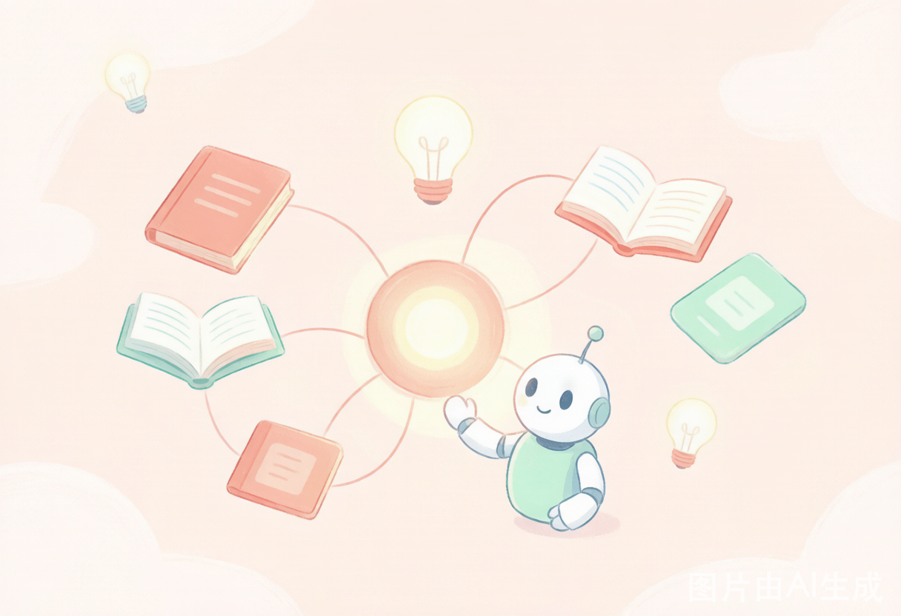
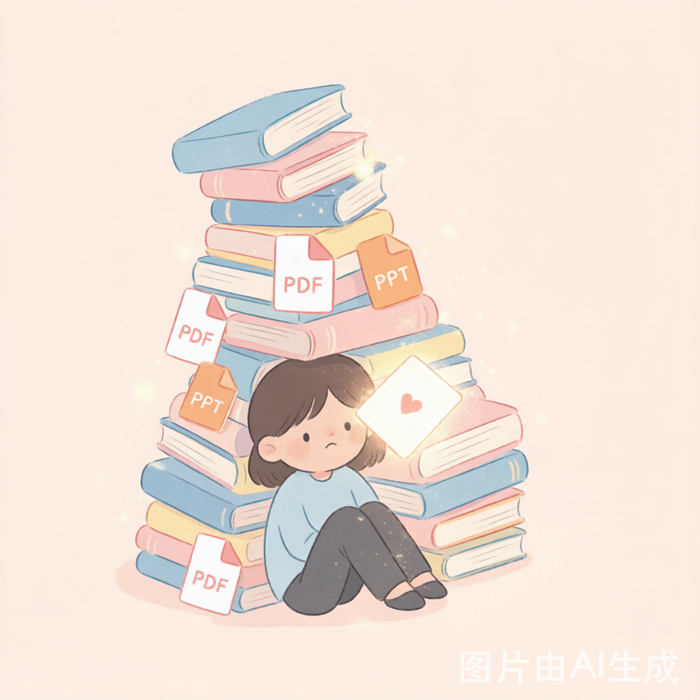
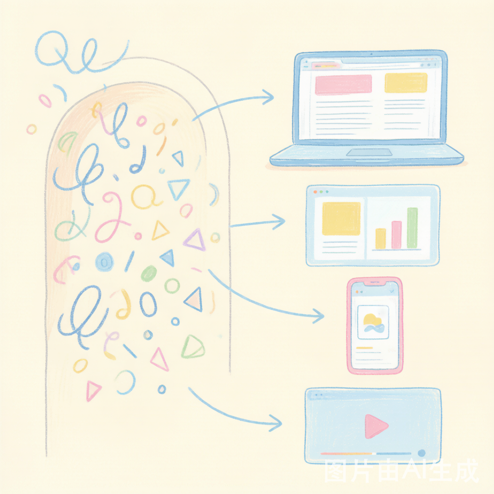
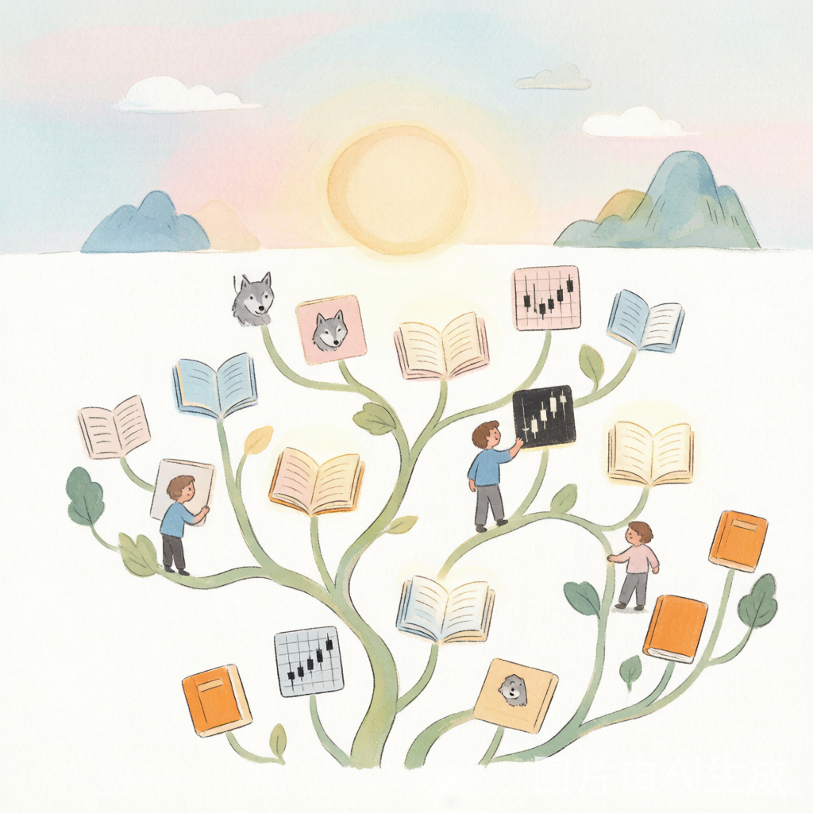

我用 1 个开源项目，把“收藏即学会”的幻觉治好了。
你有没有过这种时刻——
刷到一篇神文，手指一抖点下“收藏”，心里踏实了：“存着，以后看。”
给团队写了一份 50 页的方法论 PPT，发出去，石沉大海。
自己摸索出一套打法，想教给别人，却怎么也讲不透。
然后呢？然后那些 PDF、那些 Word、那些躺在文件夹里的“干货”，就再也没打开过。
我们管这叫“收藏即学会”。但真相是：收藏，只是把焦虑从“我没学”变成了“我存了，所以没事”。
知识最大的浪费，从来不是没人生产。而是生产出来之后——人懒得看，AI 爬不动，搜索引擎搜不到，连你自己都 diff 不了哪个版本是对的。

第一，干货困在封闭格式里。 PDF 搜不到关键词，PPT 没人看完，脑子里的经验带不走。一份好内容，一旦变成二进制文件，就等于被封印了。
第二，装 100 个 skill 互相打架。 Agent 技能仓越装越乱：重复的、冲突的、版本漂移的，最后你根本不知道该信哪一个。
第三，好方法讲不清。 你明明有一套厉害的打法，却只能用 50 页 PPT 去讲——别人看不完，你也讲不透。知识在你手里，是负担，不是资产。
我试过无数“知识管理”工具，最后发现：问题不在工具多不多，而在知识有没有“活”过来——能不能被搜索、被引用、被改写、被讲给别人听。pretty-skills 就是冲着这四点去的。
我没有再做第 101 个“技能仓”。我做了一个叫 pretty-skills 的开源项目（github.com/huangrichao2020/pretty-skills）。
一句话定位：它是你的 Agent 知识工程中枢。
传统技能仓是“按此执行 xxx”的预制工具箱，塞满指令。pretty-skills 不干这个。它干的是：把你学到的、做过的、提炼过的知识，整理成“AI 能直接读 + 人能看得懂”的结构化产物。沉淀一次，到处能看；Agent 能读，人能复用。

怎么做到“AI 能读、人能看、到处能发”？靠一套我管它叫 3F Content 的范式，外加一个叫“锦绣”的绣花工艺。
每个知识点，落地成一套三件套：
而且每个 case 都要过一道 check-3f.py 自动校验，垃圾不进仓——这保证了仓库里每一份知识，都是“活的”、可用的、能跑的。
| 以前 | 现在（pretty-skills） | |
|---|---|---|
| 一份方法论 | 50 页 PPT，发出去没人看 | 1 份 content.md + 翻页网页 + 小红书九图 + 演讲 PPT |
| 知识形态 | 死在 PDF / Word 里 | AI 能读、人能搜、能 diff、能复用 |
| Agent 技能 | 装 100 个互相打架 | 装 1 个，自动抽知识 |
▍AI狼群战法
怎么带一支多 Agent 团队？Cartman 的方法论被整理成 8 页马卡龙手绘——Context（上下文）给 Agent 一个能自己做事的“三层办公室”，Observation（观察）建一个即时反馈 + 每周复盘的进化闭环。8 张图，0 返工。一句话：“不是 AI 替代你，是会用 AI 的同行替代你。”
▍卡脖子猎手
一份真实的 A 股选股报告。按“断货 = 地震”的逻辑，在主板里挖半导体材料、稀土的瓶颈标的——最后锁定：1 只 S（盛和资源·全球稀土）、2 只 A（彤程新材·光刻胶、雅克科技·前驱体全栈），还排除掉 1 只“伪卡脖子”（有研新材·毛利率仅 6%）。9 页图文 + 10MB 真实 PPTX。这是能拿去交易的研判，不是 PPT 空话。
▍橙皮书方法论
花叔写 9 本橙皮书的方法：调研 → 规划 → 多 Agent 并行写作 → 三审三校 + 事实核查 → 构建成册。7 页源文字 + 锦绣四形态，新手照着做就能复制一套出书流水线。

现在仓库有 16 个中文领域——Agent知识、编程开发、数据科学、产品设计、商业运营、金融投资、内容创作、教育学习、游戏玩家、情感领域、做事技巧、玄学修炼、橙皮书、社交主导、视觉创作、故事写作。其中 12 个还是空的，专门等全球开发者来填。
我不想把它做成又一个“装完就完了”的工具。pretty-skills 的灵魂是“四自在”——
三分钟，三种姿势开始：
1. 用户：clone 下来当你的 Agent 底层元知识库，日常用“学一下 XXX”代替“帮我装 XXX”。
2. 贡献者：选 1 个领域，复制模板，5 分钟做一个能分享的方法论，跑一下 check-3f，提个 PR。
3. 围观：去 github.com/huangrichao2020/pretty-skills 点个 Star，再推荐给一个正被“知识管理”卡住的朋友。
担心不会写？仓库里的 _模板/案例 自带骨架，把 content.md 的字段填完，出图、生成网页、跑校验一条龙。中文优先，全程不用切英文。MIT 协议，放心用、放心改。
多花 5 分钟把知识讲清楚，比快速生成 100 份没人看的文档，强 100 倍。
这里不是工具箱，是出版局。
—— huangrichao2020